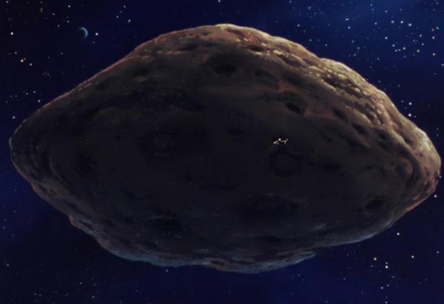

Luna II Luna II
Space 0 days from Earth Asteroid Fortress + Mine Wakkein The site of the original CMC Space Colony operation, Luna II had a long history before it became a military base. The largest asteroid fortress currently residing in the Earth Sphere, Luna II is a monster of a base, dotted front to stern with mines and catacombs, heavily mined out by the CMC before it was turned into a military fortress. Having survived the early months of the war and impervious to a nuclear barrage, Luna II is now the chief Federation fortress in space, doing its best to control the space routes between Earth and the colonies. Wakkein A serious, no nonsense fortress commander, Wakkein is known for stubbornly clinging to outdated tactics, but he uses them to great effect. He is an excellent battleship commander, and his Magellan scored two Musai kills at the battle of Lourm. Now in command of the space operations of the war, he has been able to thinly hold the battle lines at 2 Days from Earth, but is in need of new technology and a resupply from the Earth front. Luna II  |